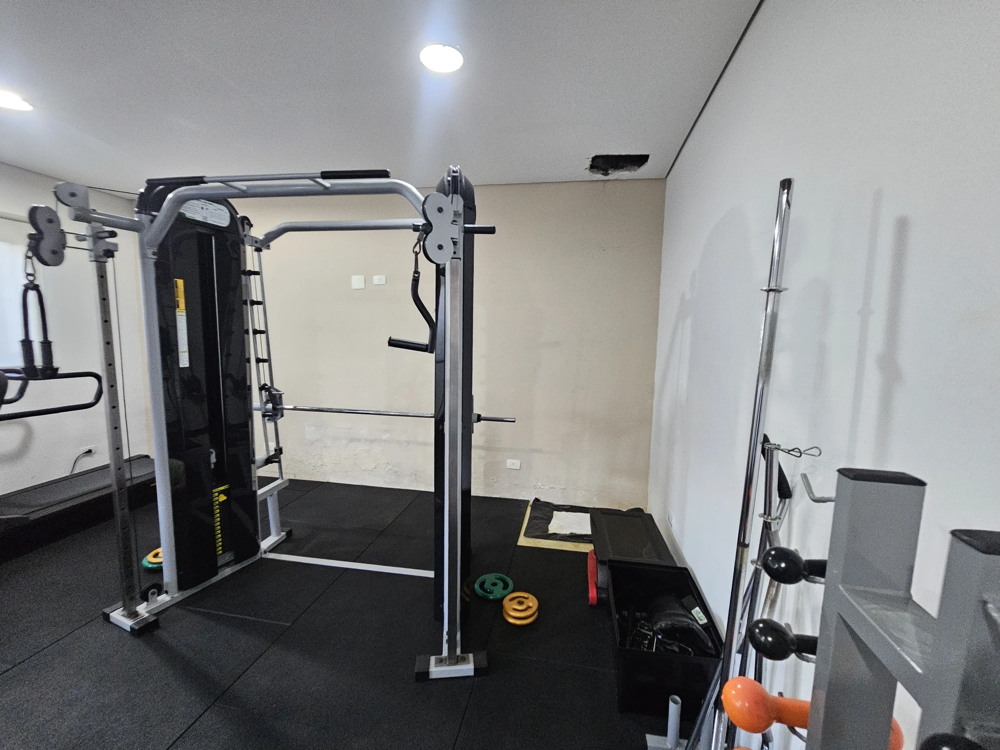
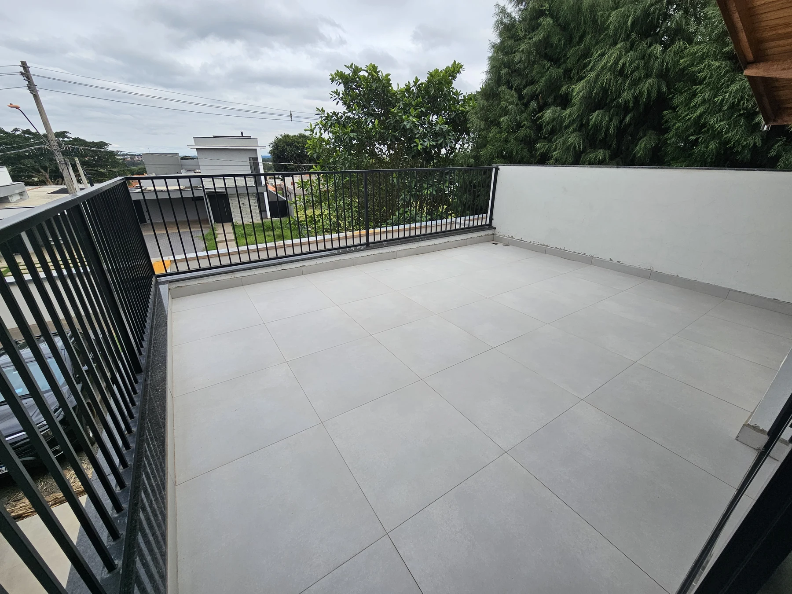
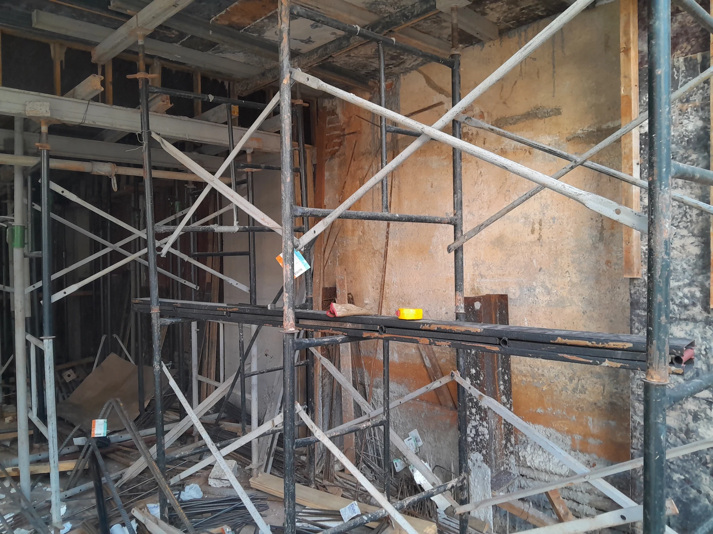

Inspeções e Vistorias Técnicas
Conheça as condições de conservação e os sinais de anomalias do imóvel.
Saiba mais
Engenharia Diagnóstica
Inspeções, perícias e investigação das causas de problemas nas edificações.

Quem somos
A Ispezionare atua em Engenharia Diagnóstica. Realizamos inspeções, avaliações e análises técnicas para identificar anomalias, investigar seus mecanismos e orientar decisões sobre as edificações.
Correlacionamos evidências de campo, histórico e documentos. A atuação reúne mais de 20 anos de experiência profissional da responsável técnica na construção civil e colaboração com empresas e profissionais especializados.
Conheça nossa históriaNossos serviços
Conheça as condições de conservação e os sinais de anomalias do imóvel.
Saiba mais
Investigue a origem de infiltrações, fissuras e outras manifestações.
Saiba mais
Fundamentação técnica para demandas judiciais e extrajudiciais.
Saiba mais
Apoio técnico no recebimento do imóvel e na análise de garantias.
Saiba maisCritério técnico
Mais de 20 anos de experiência profissional da responsável técnica na construção civil.
Independência técnica e análise de evidências, documentos e critérios aplicáveis a cada caso.
Atuação em Engenharia Diagnóstica e Patologia das Construções.
Inspeção em campo, termografia, instrumentos de medição e ensaios definidos conforme o escopo.
Informações técnicas organizadas para apoiar quem precisa decidir.
Abordagem compatível com o imóvel, seu histórico e o objetivo da contratação.
Trabalhos selecionados

Atuação IspezionareEdificação residencial
Ver projeto →
Atuação IspezionareResidência unifamiliar
Ver projeto →
Atuação IspezionareEdificação existente
Ver projeto →Quando procurar uma avaliação?
Selecione um sinal para entender como a avaliação técnica pode ajudar.
Investigar a entrada de água ajuda a orientar os reparos e evitar a repetição do problema.
Converse com nossa equipe ↗As características das fissuras e as condições da edificação orientam a investigação de suas causas.
Converse com nossa equipe ↗A inspeção registra as anomalias da fachada e orienta medidas de manutenção.
Converse com nossa equipe ↗A avaliação investiga o descolamento dos revestimentos e orienta os próximos passos.
Converse com nossa equipe ↗Para quem atuamos
Inspeções prediais, investigação de manifestações construtivas, fachadas, estruturas, impermeabilização, garantias e recebimento de obras.
Inspeções, assistência técnica, análise de manifestações construtivas, recebimento de obras e suporte às áreas de engenharia e garantia.
Investigação de umidade, fissuras, revestimentos, reformas, recebimento e demais manifestações relacionadas à edificação.
Perícias de engenharia, assistência técnica, pareceres e acompanhamento técnico de diligências.
Vamos conversar
Conte o que está acontecendo no imóvel para definirmos a avaliação necessária.
Fale com nossa equipe técnica